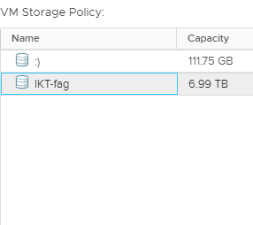
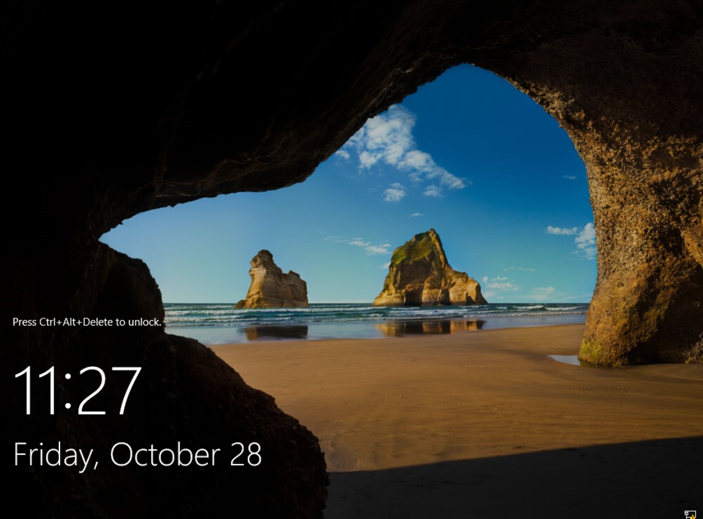
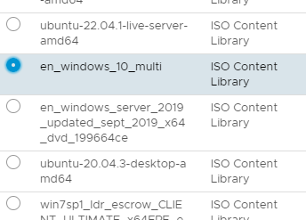

Kapittel 1: Opprette en virtuell maskin
Aller først må man opprette en ny maskin. Gå inn på vSphere, høyreklikk på ditt elev-pool, og velg "New Virtual Machine".

Når man setter opp en my maskin er det 8 steg man må gjennom. De fleste stegene, spesielt i starten, er ganske korte steg der man bare velger en mappe eller to. På det første steget skal man velge hvordan man vil opprette maskinen. Velg "Create new virtual machine", ettersom man skal lage en ny maskin fra bunnen av. Andre steg er å gi maskinen et navn og velge en mappe å installere den i. Navnet er valgfritt, men prøv å gjøre det lett å huske. Det er bare en mappe å legge maskinen under, så bare velg den.
Så skal man velge sitt elevpool. Bla gjennom listen helt til du finner ditt elevpool, og velg det. Steg 5 er å velge storage policy, altså der maskinen blir lagret, og her velger man "IKT-fag". Etter dette skal man velge compatibility, som man lar bli på "ESXi 6.7 and later".
Neste steg er å velge operativsystem. Her er vil man få en lang liste med mange ting å velge mellom. Velg Windows som "Guest OS Family", og velg "Windows Server 2016 or later" fra listen under.

Her begynner det litt mer avanserte steget, der man skal sette opp diverse instillinger og "virtual hardware" for maskinen. Gå først til "new network" og fra menyen der det står "dummy_temp_switch", velg browse. Da får man opp en meny som inneholder de forskjellige elev-poolnummerne, hvor man da velger sitt elev-poolnummer.

Neste er "new CD/DVD drive". Gå til dropdown-menyen der det står "Client device", og velg "Content Library ISO file".

I menyen som kommer opp velger man en versjon av systemet man skal installere. Finn filen som heter "en_windows_server_2019" og huk av på den.

Så skal man velge riktig disk provisioning. Gå til "New Hard Drive" og velg Thin Provision under disk provisioning. Dette er for å ikke belaste serveren for mye.

Etter det går man inn på "VM options" øverst, går inn på "Boot options", og haker av på "Force EFI setup".

Når man har gjort alt dette vil til slutt maskinen være synlig under elevpool-mappen og man kan begynne på kapittel 2.

Kapittel 2: Sette opp Windows server
Start maskinen ved å trykke på den grønne pilen øverst. Etter noen sekunder vil så "launch web console" knappen bli tilgjengelig. Trykk på den og velg "Web Console" for å komme inn på selve maskinen.

Hvis man har gjort alt i kapittel 1 riktig vil man komme inn på "Boot manager" når man åpner webkonsollen. Velg "EFI WMware Virtual SATA CDROM Drive" for å starte installasjonsprosessen.

Etter litt venting vil man få denne menyen, der man velger språkinstillingene for serveren. Her velger man det som er relevant for sin egen datamaskin.
Maskinen vil så spørre om en product key. Med mindre man faktisk har kjøpt en slik nøkkel (noe man ikke burde for virtuelle maskiner), så velger man bare "I don't have a produkt key". Etter det skal man velge versjonen av Windows server man vil installere. I denne guiden velger man "2019 Datacenter Desktop Experience", men hvis du er godt kjent med Windows server og liker å jobbe med en konsoll, kan man velge vanlig datacenter.

Så kommer noen lagringsrelaterte valg. Først vil maskinen spørre om man enten vil oppgradere versjonen man allerede har, eller om man vil gå for en custom install. Den førstnevnte instillingen er bare tilgjengelig hvis du allerede har en versjon av Windows installert på maskinen, som ikke er tilfellet her. Velg "Custom Install" og gå videre til hvor man vil installere windows, og her vil det bare være en enkelt plass å lagre maskinen på. Når man har gjort alt dette vil maskinen begynne å faktisk installere Windows, og dette kan ta en del tid.
Når Windows endelig har installert vil du bli spurt om å opprette et passord for administrator-brukeren. Her er det viktig at man lager et relativt sterkt passord, ettersom noen steg senere i guiden vil ikke la seg utføre hvis passordet er for svakt.
Når det er gjort er serveren klar til å brukes.
Kapittel 3: Lage og sette opp klientmaskin
Dette er en relativ kort, men viktig del av guiden. Klientmaskinen skal brukes til å koble opp med serveren senere, og det er derfor viktig at den er satt opp riktig. Det kan osgå hende at man på lage klientmaskinen på nytt avhengig av hva som skjer.
Opprett en ny maskin, akkurat som i kapittel 1. Når man skal velge operativsystem, så velger man "Windows 10(64-bit)" istedenfor Windows Server.

Fortsett helt fram til man velger ISO fil. Istedenfor å velge ISO filen for serveren, velger man den som heter "en_windows_10_multi". Når man har gjort det så følger man resten av guiden videre, helt fram til maskinen spør om hvilken versjon du vil installere. For denne guiden har det blitt brukt Windows 10 Pro, men Windows 10 Home burde også fungere.
